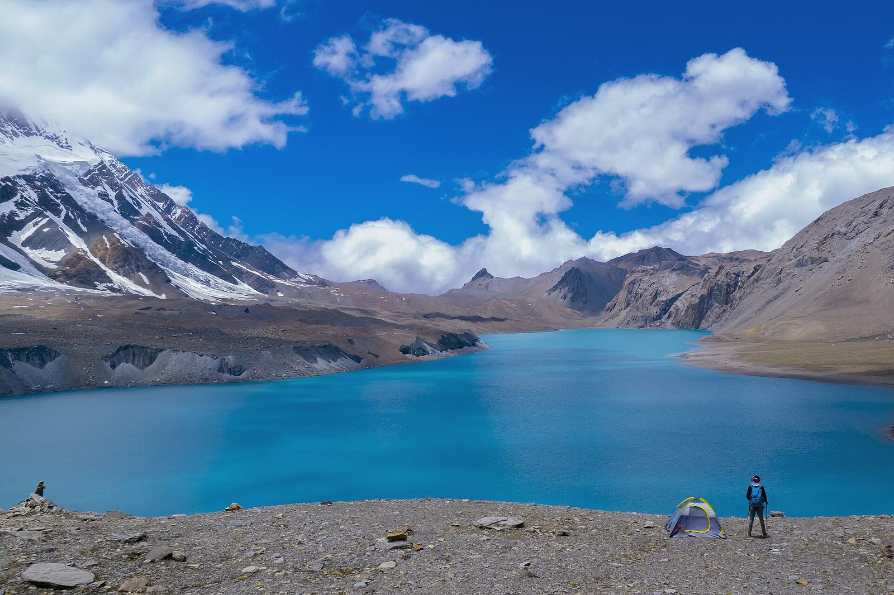

Tilicho Lake
The Annapurna Circuit with a three-day detour from Manang through Khangsar and across the landslide slopes to Tilicho Lake at 4,919 m, before crossing the Thorong La.


- Duration
- 12–16 days
- Distance
- 136 kmapproximate
- Highest point
- 5,416 mThorong La · 17,769 ft
- Highest night
- 4,450 mThorong Phedi
- Difficulty
- ChallengingTeahouse lodges
- Best months
- May, Oct–Nov
Is this trek right for me?
The walking
13 days in all. Most walking days are 5 to 6 hours on foot, and the longest is about 10 hours. Long days and several nights above 4,000 m, or a pass above 5,000 m.
The height
You sleep as high as 4,450 m. Most people feel the altitude at this height. The plan includes the rest days you need: do not shorten it.
Where you sleep
In lodges every night: a simple twin room, a shared bathroom and hot meals in a warm dining room.
The help you need
The rules require a licensed guide on this route. A porter to carry your bag is your choice.
What it costs
A guided trip with a trekking company usually costs USD 950 to 1,500 a person, going by the prices 9 companies published for 2026.
Overview
Tilicho Lake lies in a basin of ice and scree under the north face of Tilicho Peak, west of Manang, at a height usually given as 4,919 m. It is about four kilometres long, turquoise once the ice has gone and white from December until late spring. A side valley leads to it from Manang in two days, and the usual plan adds the lake to the Annapurna Circuit: up the Marsyangdi, out to the lake and back, then over the Thorong La to Muktinath.
The detour is harder than the main circuit. Beyond Khangsar the trail crosses a long stretch of unstable slopes on a path one boot wide, scratched across steep gravel with rockfall from above. The lake day itself climbs 770 m from base camp and returns the same way, eight hours or more at altitude in a wind that strengthens through the morning. Lodges at Shree Kharka and Tilicho Base Camp are simple and often full.
In return the side trip does much of your acclimatization for you. After three nights between 4,000 and 4,200 m and a day to 4,900 m, most people find the Thorong La noticeably easier than those who come straight up from Manang. A direct trail links Shree Kharka with Yak Kharka, so there is no need to go back through Manang.
Highlights
- Tilicho Lake beneath the ice wall of Tilicho Peak
- The exposed trail across the landslide slopes above the Khangsar Khola
- The high route through Ghyaru and Ngawal to Manang
- Crossing the Thorong La at 5,416 m, well acclimatized
- Khangsar, the last village before the lake
- Muktinath and the descent into Mustang
Challenging: Adds a long day to nearly 5,000 m and an exposed traverse of unstable slopes to a circuit that already crosses a 5,416 m pass.
Altitude profile
Height at the end of each day, with the high points in between. Dots are the places you sleep.
The ascent rate is within the usual guideline of about 500 m of sleeping altitude a day above 3,000 m. People still differ, so watch for symptoms. Open in the acclimatization checker.
Day by day
About 52–66 h of walking in total. Times are for a steady pace with short breaks; add more for photos and tea.
-
Day1
Drive to Besisahar, jeep to Dharapani
Pokhara to Besisahar to Dharapani
A long road day: bus to Besisahar from Pokhara or Kathmandu, then a shared jeep up the Marsyangdi on a rough track cut into the gorge wall. Sleeping at Dharapani rather than riding on to Chame gives you an extra day of gradual ascent on foot.
16 places to stay in Dharapani, such as Phulbari Hostel & Restaurant, Hotel Gurkha's Inn & Restaurant and Manaslu Hotel Restaurant. See them
Travel day- Sleep at
- 1,860 m
- Change
- +1,038 m
- Jeep
- 7–9 h
-
Day2
Dharapani to Chame
Dharapani to Timang to Koto to Chame
Mostly gentle climbing beside the river and the road, with one steep forest section between Danakyu and Timang where the footpath cuts off the road's bends. Manaslu is behind you at Timang, and Annapurna II comes into view before Chame. The hot springs across the river ease tired legs.
19 places to stay in Chame, such as Eagle Eye Hotel, Royal Garden Hotel and Tibet Hotel. See them
- Sleep at
- 2,670 m
- Change
- +810 m
- High point
- 2,750 m
- Walking
- 5–6 h
- Distance
- 16 km
-
Day3
Chame to Upper Pisang
Chame to Bhratang to Dhikur Pokhari to Upper Pisang
Through pine forest to the apple farm at Bhratang, round the foot of the Paungda Danda rock wall and up to Dhikur Pokhari for lunch. Cross the river to Upper Pisang rather than staying on the road: the view is better and it sets you up for tomorrow's high route.
18 places to stay in Upper Pisang, such as Yak & Yeti Hotel, Hotel Tukuche and Hotel Mountain Bridge. See them
- Sleep at
- 3,300 m
- Change
- +630 m
- Walking
- 5–6 h
- Distance
- 15 km
-
Day4
Upper Pisang to Manang through Ghyaru and Ngawal
Upper Pisang to Ghyaru to Ngawal to Braga to Manang
Climb the switchbacks to Ghyaru and follow the high trail through Ngawal before dropping to the valley floor and walking on through Braga to Manang. It is a long day, but being above 3,600 m at midday and sleeping lower is exactly what your body needs before the lake.
20 places to stay in Manang, such as Ghale guest house, Xchongla Homestay and Thorong La. See them
- Sleep at
- 3,519 m
- Change
- +219 m
- High point
- 3,670 m
- Walking
- 6–7 h
- Distance
- 19 km
-
Day5
Acclimatization day in Manang
Manang to Gangapurna Lake to Manang
Two nights here are the minimum. Walk to Gangapurna Lake and up the moraine to the Chongkor viewpoint, then rest. Buy snacks for the days ahead, where lodges are basic, and ask lodge owners about the state of the landslide trail and whether the base camp lodges are open.
20 places to stay in Manang, such as Ghale guest house, Xchongla Homestay and Thorong La. See them
Rest day to get used to the height- Sleep at
- 3,519 m
- Change
- 0 m
- Walking
- 2–3 h
-
Day6
Manang to Shree Kharka
Manang to Khangsar to Shree Kharka
Leave the main circuit at the western end of Manang, drop to the river and climb to Khangsar, the last real village, for an early lunch. A steady hour and a half more, past a small monastery, brings you to the lodges at Shree Kharka. The sleeping gain is about 540 m, so walk slowly.
4 places to stay in Shree Kharka, such as Hotel Tilicho Peak and Restaurant, Himalayan Hotel and Mountain eco cottage. See them
Sleeping altitude rises 541 m, a little over the 500 m guideline, balanced by the rest night before it.
- Sleep at
- 4,060 m
- Change
- +541 m
- Walking
- 4–5 h
-
Day7
Shree Kharka to Tilicho Base Camp
Shree Kharka to Tilicho Base Camp
The crux of the approach. After about an hour the path enters the landslide area: a narrow track across steep, loose gravel with rock pinnacles above and the river far below. Go early, before sun and wind start stones moving, keep gaps between people and do not stop. Base camp is on the valley floor beyond.
11 places to stay in Tilicho Base Camp, such as Hotel New Himalayan, Hotel Khangsar Kang and New Hotel Moon Lake. See them
- Sleep at
- 4,150 m
- Change
- +90 m
- Walking
- 3–4 h
-
Day8
Tilicho Lake, then back to Shree Kharka
Tilicho Base Camp to Tilicho Lake to Tilicho Base Camp to Shree Kharka
Start by five. The trail zigzags up the moraine for three to four hours to a crest a little higher than the lake, then eases down to the viewpoint above the shore. Leave by ten, when the wind rises, return to base camp for lunch and recross the landslide slopes to Shree Kharka.
4 places to stay in Shree Kharka, such as Hotel Tilicho Peak and Restaurant, Himalayan Hotel and Mountain eco cottage. See them
High point day- Sleep at
- 4,060 m
- Change
- −90 m
- High point
- 4,919 m
- Walking
- 8–10 h
-
Day9
Shree Kharka to Yak Kharka
A high traverse saves going back to Manang. The trail climbs past the ruins of old Khangsar to a shoulder with a long view down the Marsyangdi, drops steeply to a footbridge over the river and climbs to join the main circuit below Yak Kharka. There are no lodges on the way, so carry lunch.
7 places to stay in Yak Kharka, such as Hotel Gangapurna, Thorong Peak Hotel and Hotel Nyeshyang. See them
- Sleep at
- 4,018 m
- Change
- −42 m
- Walking
- 4–5 h
-
Day10
Yak Kharka to Thorong Phedi
Yak Kharka to Ledar to Thorong Phedi
Back on the main circuit: an hour to Ledar, a drop to the river, and a climb to a traverse where stones come down from the slope above. After the lake this height should feel comfortable. If it does not, wait a day here or lower before trying the pass.
3 places to stay in Thorong Phedi, such as Hotel New Phedi, Thorong Base Camp Lodge and Hilltop hotel. See them
- Sleep at
- 4,450 m
- Change
- +432 m
- Walking
- 3–4 h
- Distance
- 7 km
-
Day11
Over the Thorong La to Muktinath
Thorong Phedi to Thorong High Camp to Thorong La to Muktinath
Start between four and five. Zigzags lead to High Camp, then a long climb over moraine and past false summits reaches the pass at 5,416 m, usually four to five hours from Phedi. The 1,650 m descent to Muktinath is steep and loose at first; go slowly and use poles.
17 places to stay in Muktinath, such as Town house, Hotel Moonlight and The Paths of Dream. See them
Pass day- Sleep at
- 3,760 m
- Change
- −690 m
- High point
- 5,416 m
- Walking
- 7–10 h
- Distance
- 16 km
-
Day12
Muktinath to Jomsom by Lubra
Take the footpath that avoids the road: over a ridge south of Muktinath, steeply down to the Panda Khola and the Bon village of Lubra, then along the gravel riverbed to the Kali Gandaki and Jomsom. After heavy rain the riverbed can be impassable, and the road by Kagbeni is the fallback.
44 places to stay in Jomsom, such as Shaligram, Jomsom Alpen Rose and Hotel Jomsom View. See them
- Sleep at
- 2,720 m
- Change
- −1,040 m
- Walking
- 5–6 h
-
Day13
Fly or drive to Pokhara
Morning flight to Pokhara if wind and cloud allow, or eight to ten hours by road down the Kali Gandaki through Tatopani and Beni. Flights are often cancelled, so do not book an international departure for the next day.
Travel day- Sleep at
- 822 m
- Change
- −1,898 m
- Flight
- 1 h
Ways to change it
The lake as a return trip from Manang
If you are not crossing the Thorong La, walk to the lake and back to Manang in three or four days and take a jeep down the valley.
Straight to base camp
Strong, acclimatized walkers go from Manang to Tilicho Base Camp in one day of six to seven hours. It means crossing the landslide slopes in the afternoon, when rockfall is worse.
Mesokanto La to Jomsom
A camping route continues round the lake and over the Mesokanto La, above 5,000 m, to Jomsom. It is remote and often snowbound, and needs tents, food for two or three days and a guide who knows it.
Start from Chame
Taking a jeep to Chame saves a day. Make up for it with a third night in Manang or a night in Khangsar.
Route map
The map loads when you scroll here. It needs a connection the first time; tiles you have viewed stay available offline.
The solid line follows footpaths mapped in OpenStreetMap; dashed sections simply join two stops where no path is mapped. It is a guide to where the route goes, not a navigation track: trails are rerouted after landslides, so follow the signs and people on the ground. Marker positions come from OpenStreetMap where we could match a place, and from our own estimates elsewhere.
Download the trail for a map app A GPX file with 120 km of mapped path and every stop; sections with no mapped path are left out. It opens in free apps such as Organic Maps.
When to go
- January: difficult
- February: difficult
- March: difficult
- April: good
- May: best time
- June: difficult
- July: difficult
- August: difficult
- September: good
- October: best time
- November: best time
- December: good
The lake is free of ice and at its bluest from about late May to November, and October and early November are the most reliable weeks. In April the trail is usually open, but the lake is still frozen and snow lingers above base camp. From mid-December to March heavy snow and avalanche danger often close the route and the base camp lodges shut. Manang is dry in the monsoon, but the road in is unreliable.
Permits and guide rules
Guide required. Since April 2023 the Nepal Tourism Board has required foreign trekkers in conservation areas to walk with a licensed guide, though checks on the trail are inconsistent. A guide matters more on this detour than on the main circuit: the line through the landslide area changes every season, the base camp lodges need booking ahead, and someone has to judge the weather for both the lake and the pass.
ACAP
Conservation areaAnnapurna Conservation Area Permit · National Trust for Nature Conservation
| Foreign nationals | NPR 3,000 | person, single entry |
| SAARC nationals | NPR 1,000 | person, single entry |
Where: Online at NTNC's e-permit site, or in person at the Tourist Service Centre in Bhrikutimandap, Kathmandu, and the Nepal Tourism Board office in Pokhara. A permit issued at a trail checkpost costs double.
The fee includes tax and children under 10 do not need a permit. Paying online by card adds a 2.9% gateway charge. Covers every trek in the Annapurna range and Lower Mustang; Upper Mustang and Nar Phu need a restricted-area permit as well.
TIMS card
RegistrationTrekkers' Information Management System card · Nepal Tourism Board and the Trekking Agencies' Association of Nepal
| Foreign nationals | NPR 2,000 | person, per trek |
| SAARC nationals | NPR 1,000 | person, per trek |
Where: Only through a registered trekking agency, which applies in the Nepal Tourism Board's online system with your route and your guide's details. Individual trekkers can no longer buy one over the counter.
Since the revised rules of 31 March 2023 the card is tied to trekking with a licensed guide on the tourism board's listed routes. It is not used in Khumbu, where the municipality's Trek Card took its place in 2017. For restricted areas the published rules pull both ways: TAAN's pages say TIMS applies in every trekking area, restricted ones included, yet also list visitors holding Department of Immigration permits among those who do not need one, and agencies disagree. Your agency, which is compulsory there anyway, will know what the checkposts on your route ask for. Reports from 2025–26 describe patchy checks of the card, especially in Annapurna.
Agency required
Fees and rules change, sometimes mid-season. Treat these as a planning guide and confirm with the Nepal Tourism Board, the Department of Immigration or a registered agency before you travel. Last reviewed 2026-11. All permits and fees
Getting there
Reach Besisahar by bus from Kathmandu in six to seven hours or from Pokhara in four to five, then take a shared jeep up the Marsyangdi road to Dharapani or Chame. The trek finishes at Jomsom, with early flights or a day-long road journey to Pokhara.
-
Bus: Kathmandu to Besisahar · 6–7 hr
Direct buses and microbuses leave early in the morning.
-
Bus: Pokhara to Besisahar · 4–5 hr
Several morning departures.
-
Jeep: Besisahar to Dharapani · 3–4 hr
Shared jeeps leave when full. Expect delays in the monsoon, when landslides cut the road.
-
Jeep: Besisahar to Manang · 8–10 hr
Possible, but arriving at 3,500 m by road means at least three nights in Manang before going any higher.
-
Flight: Jomsom to Pokhara · 20 min
Early-morning flights only, often cancelled for wind or cloud.
-
Bus: Jomsom to Pokhara · 8–10 hr
Bus or jeep down the Kali Gandaki through Tatopani and Beni.
Hazards on this route
The landslide area
Between Shree Kharka and Tilicho Base Camp the trail crosses steep, unstable gravel for well over an hour, and stones fall without warning, more so in wind, rain or thaw. Cross early in the day, keep moving, leave space between walkers and do not attempt it in rain or fresh snow. The path is rebuilt every season and its line changes.
Altitude and wind at the lake
The lake day goes to nearly 5,000 m and takes eight hours or more. Wind picks up sharply from mid-morning and the air temperature can be well below freezing. Turn round if anyone in the party has a worsening headache, and be off the upper slopes by eleven.
Snow and avalanches in winter and spring
From December to April the slopes above base camp hold snow, the trail can be buried and avalanches cross the route. The base camp lodges close in mid-winter. Ask in Manang and Khangsar before setting out.
The Thorong La
Everything that applies to the pass on the main circuit applies here. Start early, do not go in bad weather, and go down if symptoms worsen at Thorong Phedi.
Too few beds
Shree Kharka and Tilicho Base Camp have only a few lodges between them. In October people are turned away or sleep in dining rooms, so have your guide book ahead.
Practical tips
- Pack light for the detour. You carry everything across the landslide slopes twice.
- Use trekking poles and boots with a firm edge on the gravel traverse.
- Take sunglasses, sunscreen and a windproof layer to the lake; the glare off ice and water is fierce.
- Bring all the cash you need from Kathmandu or Pokhara. There is nowhere to get money beyond Chame.
- If the weather turns at base camp, wait a day rather than rushing to the lake in cloud.
- The lake's quoted height, the line of the landslide trail and which lodges are open all vary by source and season; confirm in Manang.
Cash machines on the route: Besisahar, Chame, Jomsom. They run out of cash and go offline, so carry what you need from Pokhara. Work out how much.
Plan this trek
Choose your dates and see the whole trip on one page: where you sleep each night, who can help you, what it may cost and the papers you need. Then ask for a price.
More tools for this trek
Who can help you on this trek
The rules require a licensed guide on this route. A porter to carry your bag is your choice.
-
A trekking company that arranges everythingUsually USD 950 to 1,500 a person for everything on the trek.
-
A guide, and a porter to carry your bagAbout USD 25 to 40 a day for the guide and USD 18 to 25 for the porter.
-
A guideAbout USD 25 to 40 a day.
-
A porter to carry your bagThe rules require a licensed guide on this route.
-
On your ownThe rules require a licensed guide on this route.
Do you work on the Tilicho Lake route as a guide, porter or company? Join TrekkSewa.
Quick answers
How long does the Tilicho Lake trek take?
Most people take 12–16 days. The itinerary on this page is 13 days, including 1 day for rest and acclimatization.
How high does the Tilicho Lake trek go?
The highest point is Thorong La at 5,416 m (17,769 ft). The highest place you sleep is Thorong Phedi at 4,450 m.
How difficult is it?
We grade it challenging. Adds a long day to nearly 5,000 m and an exposed traverse of unstable slopes to a circuit that already crosses a 5,416 m pass.
Which permits do I need?
ACAP, TIMS card. Fees and where to get each one are listed in the permits section above.
Do I need a guide?
Since April 2023 the Nepal Tourism Board has required foreign trekkers in conservation areas to walk with a licensed guide, though checks on the trail are inconsistent. A guide matters more on this detour than on the main circuit: the line through the landslide area changes every season, the base camp lodges need booking ahead, and someone has to judge the weather for both the lake and the pass.
When is the best time to go?
May, Oct–Nov are best. The lake is free of ice and at its bluest from about late May to November, and October and early November are the most reliable weeks. In April the trail is usually open, but the lake is still frozen and snow lingers above base camp. From mid-December to March heavy snow and avalanche danger often close the route and the base camp lodges shut. Manang is dry in the monsoon, but the road in is unreliable.
Stage plans on this route vary between operators; treat distances and times as approximate. Reviewed 2026-11. Trails, lodges and rules change; confirm locally before you rely on any detail. Report a correction.
Similar treks
More in Annapurna Annapurna
Annapurna
Annapurna Circuit
Around the Annapurna range and over the 5,416 m Thorong La
 Annapurna
Annapurna
Nar Phu Valley
Two stone villages of Tibetan origin and a 5,320 m pass north of Annapurna
 Mustang
Mustang
Jomsom & Muktinath
Pilgrim shrine, apple villages and the Kali Gandaki between two 8,000 m peaks
 Mustang
Mustang
Upper Mustang
Twelve days across the high desert to the walled town of Lo Manthang